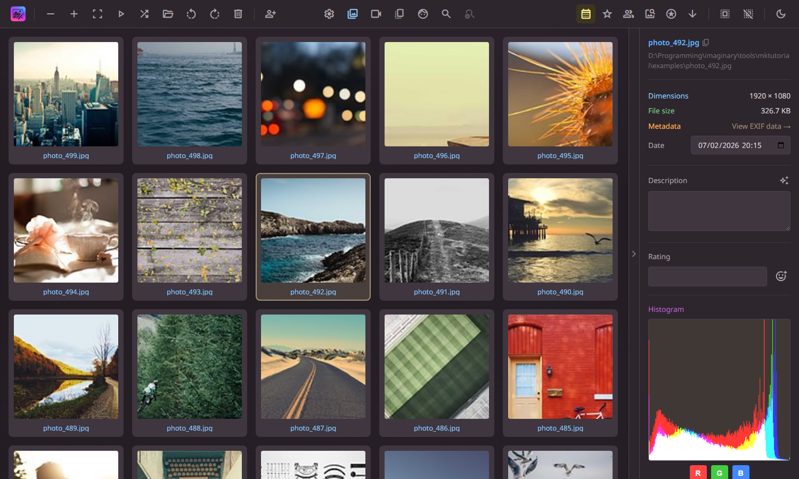
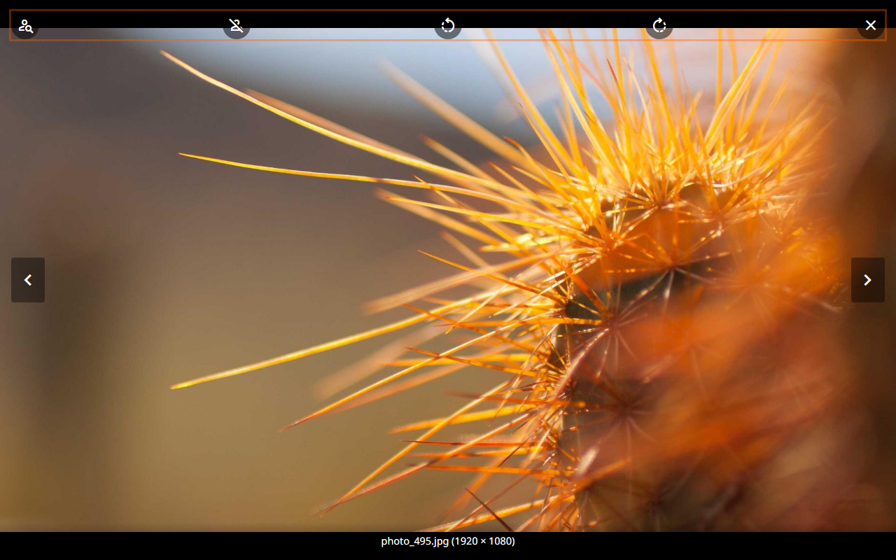
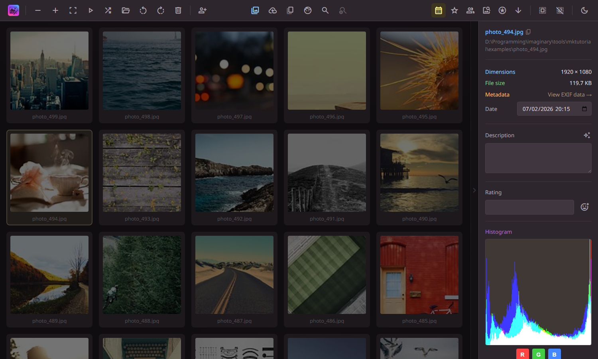
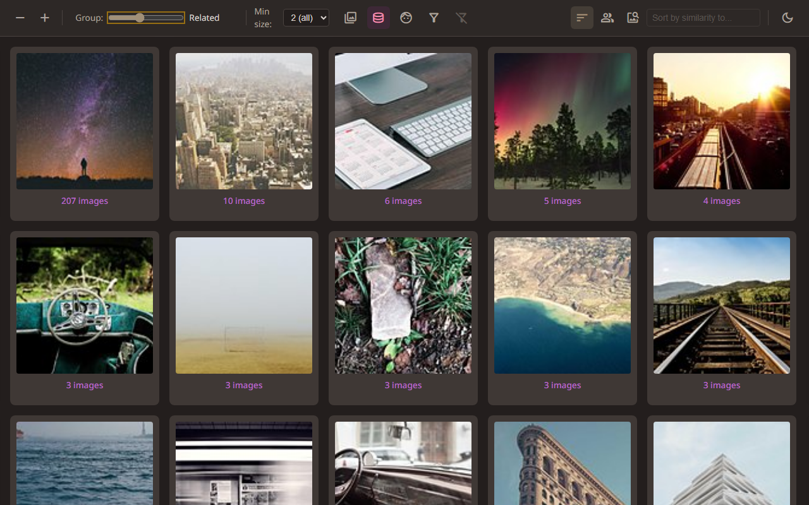
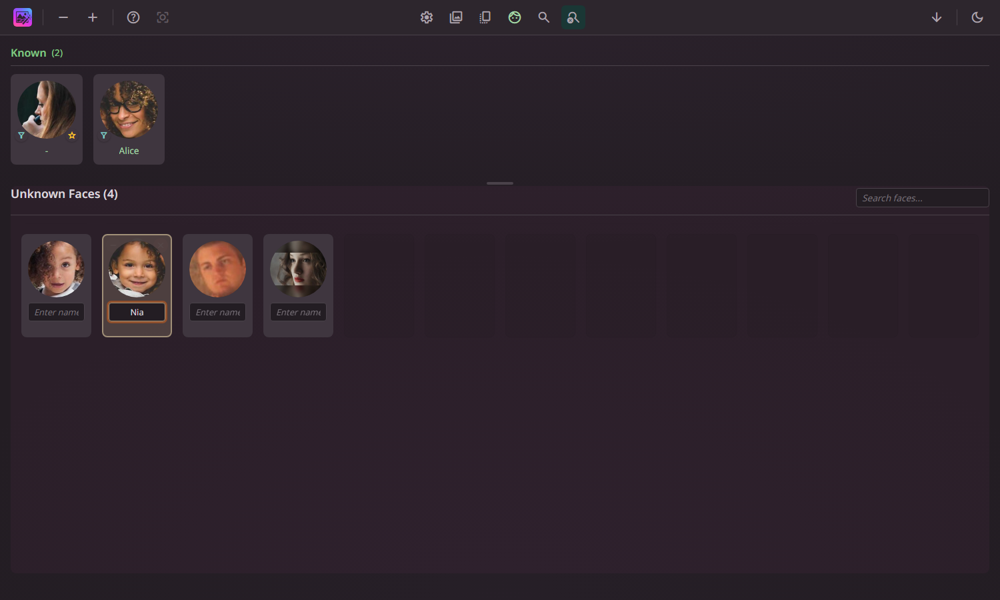
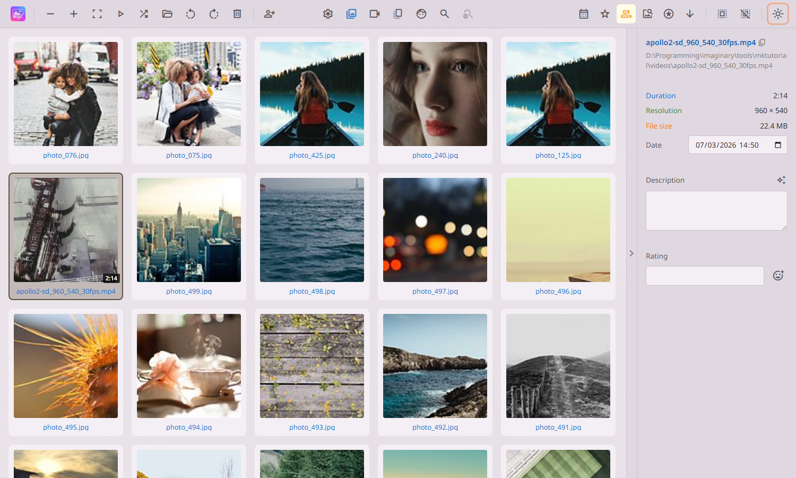
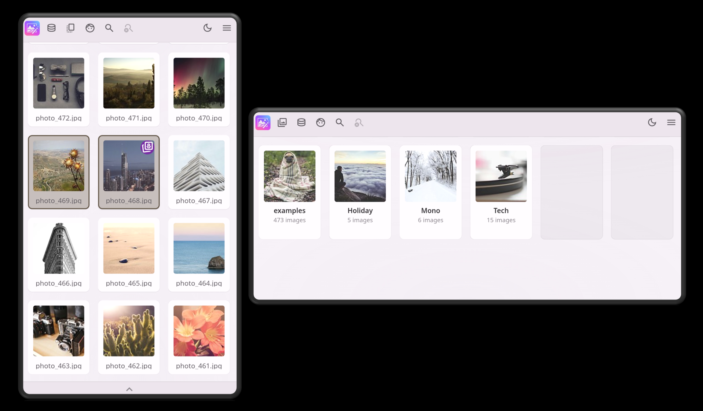

Public Beta Photonarium is under active development. Features may change and bugs may occur.
AI-powered local photo and video catalogue with semantic search, face recognition, and duplicate detection. Search within videos at the scene level. Runs entirely on your machine — no cloud, no accounts, no tracking.
Runs entirely on your machine. No cloud, no accounts, no tracking. Your photos and videos never leave your computer.
Pre-built Docker images for Synology, QNAP, Unraid, and any system with Docker. GPU acceleration supported.
Browse your library from any device on your network. The responsive layout adapts to phones and tablets in both portrait and landscape.
Describe what you're looking for in natural language. Search images, or find specific moments within videos with scene-level semantic search.
Automatic face detection and recognition. Name faces and Photonarium finds them for you.
AI aesthetic scoring ranks your images by visual quality. Find your best shots instantly.
Four levels of similarity detection — from identical copies to thematically related images.
Images, camera RAW (20+ formats), and video side by side. Automatic scene detection, keyframe extraction, and speech transcription.
Use Photonarium from multiple devices at once. Changes made on one — naming faces, rating media — appear on all others within seconds.







Run docker pull 7thsw/photonarium:latest to download the pre-built image with all AI models included.
Mount your config directory and media library, then run the container. See the Docker guide for full setup.
Open http://your-nas:5000 in your browser. Your photos and videos will start indexing automatically.
Grab the latest release from GitHub and extract the archive. You'll need Python 3.10 or later installed.
Run install.bat (Windows) or install.sh (Linux/Mac). The installer sets up a virtual environment, installs all dependencies, and downloads the AI models.
Activate the virtual environment, run python app/app.py, and open http://localhost:5000 in your browser. Add your media folders and start exploring.